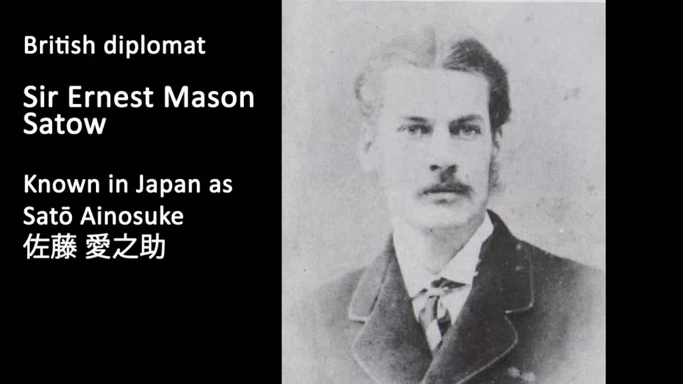

Curious Being
Revelations of a Massive Underground Oya Quarry in Japan!
Tina · 22 min · watch on YouTube · summarised 2026-08-23
Oya, north of Tokyo, is a vast underground quarry now open as a museum: chambers 30 m high with gigantic square columns. The stone is a volcanic tuff, soft and easy to work, and has been used locally since the Kofun period over 1,500 years ago for burial sarcophagi 00:00–00:33.

The space that prompts the question - and how recently it was made.
The walls are covered in the marks the channel has been arguing about: parallel horizontal layers with slanted strokes running between them. They are, she says, the same marks as at Mount Nokogiri, where the regularity is such that they look like modern machine marks — which raised the question of whether a lost civilisation cut them and later Japanese reused the mountain 00:33–01:29.

The marks the whole argument is about, at a size where the bands and the strokes can both be seen.
So: were the Oya marks made by hand tools or machinery?
The answer, given straight away
"The answer is No." The underground chambers are not ancient. Work began in 1919 and ended in 1986 01:44–02:07. Oya stone has been extracted in the area for over a millennium, but the great underground quarry was made over roughly seventy years in the modern era.
The records say it was dug with pickaxes until the 1950s and then by machine. The museum's own site carries old photographs — railroads, outdoor quarries, workers cutting stone with pickaxes, workers carrying blocks. Hand cutting left the layered marks; the newer machines left saw marks. So the layered markings at Oya are manual labour 02:07–02:56.

Who made the marks, and when - in one dated photograph.

How the stone left the quarry before machinery.
Her conclusion from that is careful rather than sweeping 02:56–03:30. It does not follow that every site with similar marks was hand-cut, or that Nokogiri was. In fact she says the Oya story casts further suspicion on the hand-tool reading of Nokogiri, and that many megalithic sites with these markings remain, to her, more likely machine-made.
Why the marks are so regular
Japan sits on the Pacific ring of fire, which is why tuff is everywhere; Nokogiri, Oya and the other quarries with these marks are all tuff quarries. Tuff runs 4–6 on the Mohs scale — limestone is 3–4, an iron nail 4.5, granite 6.5–7 03:30–04:15.

The hardness argument, in the graphic it is made from.
Before machinery arrived in the 1950s, a stonemason at Oya swung his pickaxe about 4,000 times to free a single block measuring 18 × 30 × 90 cm 04:15–04:52. Frank Lloyd Wright's Imperial Hotel, completed in 1922, was built with Oya stone.
Then the documentary section, which is the best-researched in the video 05:00–07:55. Edo-period records for the Oya villages survive in detail: in 1774 a quarry village of 37 houses and 132 people — 70 men, 61 women and one monk — of whom not all worked in the quarry. A record of 1685 has eight stonecutters ordered by the government to do quarrying business. An official record of 1865 has nine stonecutters in the village. For the restoration of the Iwahara village shrine in 1754, seventeen stonecutters were ordered to prepare the stone, and the payments were written down. Some researchers read those numbers as heads of households, so nine might mean nine families. Either way, she concludes, quarrying was a small business.
It changed in the Meiji period (1868–1912), when railways made transport possible and demand expanded. The big Oya underground quarry began seven years after Meiji ended. And every other tuff quarry with the same marks that she checked turns out to be Meiji-era work: Miyadani from about 1887, Yabutsuka from the mid-Meiji, Ikebukuro at the end of it, Innai worked on a small scale in the Edo period and greatly expanded under Meiji. The Sapporo soft stone quarry was found in 1871 by the geologist Thomas Antisell and the civil engineer A. G. Wharfield, both invited to Japan from the United States.
Her explanation for why they all appear at once 07:55–11:14: the Meiji Restoration replaced a timber building tradition with a Western one in brick and stone, partly to stop fires. In feudal Japan stone was not a primary construction material and quarries were small. A 2021 report on Oya stone buildings and townscapes, which she quotes, states that the construction period of Oya stone buildings began in the early Meiji era. As stone buildings were wanted, quarrying became a leading local industry, and tuff — soft, light, easy to cut and carry — was what the new demand ran on. Many of the quarries closed only when cement and concrete arrived.
Then the mechanism, offered as a proposal rather than a finding 11:14–13:30. Industrialising Japan needed iron, and cheap mass-produced steel had been developed in the mid-19th century. If the technique was imported quickly, quarry hand tools would have been upgraded with it. Tuff at 4–6 and iron at about 4.5 are comparable, so a plain iron pickaxe might not cut tuff cleanly or leave continuous strokes; a steel edge at 6.5 would. On that reading the neat layered marks at the Meiji quarries are a product of cheap steel, not of antiquity —
even though the uniformed layered tool marks at the Oya underground quarry and other Meiji tuff quarries were created by hand tools, these markings still resulted from the industrialization of Japan.
What she keeps out of it
Mount Nokogiri 13:30–19:28. The largest and most impressive of the quarries, and the one she will not concede. Her argument is documentary and it is a real one.
Nokogiri is said to have been quarried from the Edo period, but probably on a small scale — its stone was not commissioned for Edo Castle, and demand generally was limited. By the pattern of every other quarry, Meiji should have been its main period. But the saw-toothed cliffs that give the mountain its name were already there before Meiji: on 8 September 1862 the British diplomat Ernest Satow, on his way to take up a post at the British legation, recorded seeing the saw-like mountain to his right from the steamship Lancefield in Tokyo Bay.


The single source placing the Nokogiri cliffs before the Meiji contracts, and what stands in for it on screen.
If the quarry was visible from the bay in 1862, she argues, large quantities of stone had already been taken and large rock faces already exposed. And the documented destinations for Nokogiri stone all come later: the Tokyo Bay fortress from 1880, Waseda University founded in 1882, planning for the port of Yokosuka from 1865, most of the port of Yokohama from about 1895. So the big contracts followed the cliffs rather than making them.
Her other line is the absence of records. The Oya villages have detailed Edo-period documentation of population, masons, projects and payments. She checked multiple Japanese websites and found nothing comparable for Nokogiri, and no report documenting substantial pre-Meiji quarry work there. Nor, she says, are there numerous Edo-period buildings of Nokogiri stone to account for it — the stone turns up in local walls, gateposts, garden lanterns and stoves, which would not require reshaping a mountain.
She adds a practical point: in an open quarry masons work from the top down, and small-scale extraction gives nobody a reason to climb to the summit and clear a haulage path. A quarry that size starts only with large, continuous, well-paid contracts.
So: who quarried a mountain over 300 m high, visible from Tokyo Bay, and where are the records?
Longyou she also keeps out, on two grounds 19:28–20:15: it is cut in sandstone, which she puts at 6–7 on the Mohs scale and therefore level with steel tools; and the Longyou markings have subtle but distinct differences from the Japanese tuff marks. She says she may make a video about it.
What you can check yourself
- The quarry's dates are a matter of record. 1919 to 1986 is not an interpretation, and the museum publishes its own history.
- There are photographs of the work being done. One shown in the video is dated 1952 and has two men standing on top of a freshly cut pillar with the layered banding running down the face beneath them. Another shows workers carrying blocks up a timber stair on their backs. Both are on the museum's material.
- The Edo records she cites are specific enough to look for: a village of 37 houses and 132 people in 1774, eight stonecutters in 1685, nine in 1865, seventeen for the Iwahara shrine restoration in 1754, with payments.
- **Ernest Satow's diaries and A Diplomat in Japan are published.** The date is given as 8 September 1862 and the ship as the Lancefield, so the passage can be found and read.
- The destinations for Nokogiri stone are dated buildings and works: the Tokyo Bay fortress, Waseda University, and the ports of Yokosuka and Yokohama.
- The Imperial Hotel is documented. Frank Lloyd Wright's building, completed 1922, used Oya stone.
- The Mohs figures are on a standard chart she reproduces, and the working properties of tuff and sandstone are testable by anyone who cuts stone.
What the video does not settle
- Her own opening undercuts the steel argument. She says at the start that Oya tuff was worked into burial sarcophagi in the Kofun period, over 1,500 years ago. Kofun Japan had iron, not Bessemer steel, and it was cutting this stone. The video never returns to that, and it is the clearest test of the claim that iron tools could not work tuff effectively.
- A scratch-hardness scale is applied to a percussive operation. Mohs measures what will scratch what. Quarrying with a pick is fracture, not abrasion, and a softer tool striking hard enough breaks a harder rock. Why the scratch test is the right one for this question is never argued.
- "Iron" and "steel" are each treated as one material. The chart she shows says iron nail 4.5 and steel file 6.5 — two particular objects, chosen as field-testing references, not the range of what iron and steel can be. Hardened wrought iron, case-hardened edges and cheap mild steel are all in play and none is distinguished.
- The Nokogiri gap is decades wide, not millennia. Her own evidence places the cliffs before 1862 and the big contracts from 1865 onwards, in a mountain she says was already being quarried in the Edo period. The unexplained interval is between small-scale Edo working and a face visible from the bay — and the video ends by asking whether a prehistoric civilisation did it.
- The amount of stone removed at Nokogiri is never estimated. The argument is that the volume is too large for the known demand, and no volume is given, at either end.
- Satow's note records a silhouette, not a quantity. What he wrote is that he saw a saw-like mountain from a ship. That a cut face is visible from a bay does not establish how much rock came out of it, and the passage itself is not shown or quoted — a portrait and a woodblock print stand in for it.
- The record search was a web search, and she says so. "I checked multiple Japanese websites." Whether Nokogiri has Edo-period documentation in an archive, and whether records for a mountain on a different domain would survive the way village records do, is not addressed.
- Absence of Edo buildings in Nokogiri stone is asserted from the same search. The stone is reported in walls, gateposts, lanterns and stoves; how much of that survives, and whether anyone has surveyed it, is not said.
- The Longyou exemption rests on a comparison she does not make here. The "subtle yet distinct differences" between Longyou marks and Japanese tuff marks are asserted and postponed to a future video, and they are what her remaining machine claim now depends on.
- The sandstone hardness figure does the same work twice. Sandstone is quoted at 6–7 because quartz grains are hard, but how a sandstone works under tools depends on its cement, and sandstone is routinely cut with iron. The number is used to place Longyou beyond hand tools without that being examined.
- The steel proposal is a hypothesis and is treated as one — and then leaned on. She hedges it properly ("we can reasonably propose", "it's possible") and then makes it the explanation for every Meiji quarry's marks. No dated tool, no metallurgical study of a quarry pick, and no before-and-after comparison of marks either side of the change is offered.
- The interiors are seen under installed coloured lighting, as at the Chinese grotto sites, and no note is made of what that does to surface texture in a video whose subject is surface texture.
See also
- Mount Nokogiri Quarry: Ancient Machines or Hand Tools? — four weeks earlier, where she argues both sides and does not decide. This video is the middle step: Oya conceded, Nokogiri held back.
- A Method to Decipher Ancient Machine Marks from Hand Tools — November 2025, where she names Nokogiri as hand work and explains why. The reversal is not flagged in either video.
- Mystery Solved on the Purpose of Longyou Caves! — the site she explicitly keeps out of the concession here.
- Israel's Land of 1,000 Caves — the same argument four years earlier, made about a soft chalk she describes as diggable with fingernails.
What we have not checked
- No primary record has been consulted. The 1919–1986 dates, the 1950s changeover, the 4,000 pickaxe strokes, the 18 × 30 × 90 cm block, the 30 m ceiling height and the Edo village figures are all as she gives them.
- The Edo documents are described, not shown. The 1774 village census, the 1685 and 1865 stonecutter counts and the 1754 Iwahara shrine order are quoted from her narration only.
- The 2021 report on Oya stone buildings is quoted and not identified — no author, title or publisher.
- Satow's passage is not shown. He is fully named on screen, with his Japanese name, and the date and ship are given in the narration; the text itself is illustrated with a 19th-century Japanese woodblock print of a bay, not with the book. The passage has not been located or read.
- The other quarries are named without sources: Miyadani, Yabutsuka, Ikebukuro, Innai, and the Sapporo soft stone quarry with Thomas Antisell and A. G. Wharfield. The spellings are as heard and have not been checked.
- Which site each mark photograph shows is not stated. The cleft with the layered walls is not captioned, and whether it is Oya or Nokogiri is inferred from context at best.
- Some footage is credited on screen to zekkei-project.com; the rest of the imagery is uncredited.
- The location is given only as "close to Tokyo". The quarry is in the Oya district of Utsunomiya, roughly a hundred kilometres north of the city; that is general geography, not something the video says.